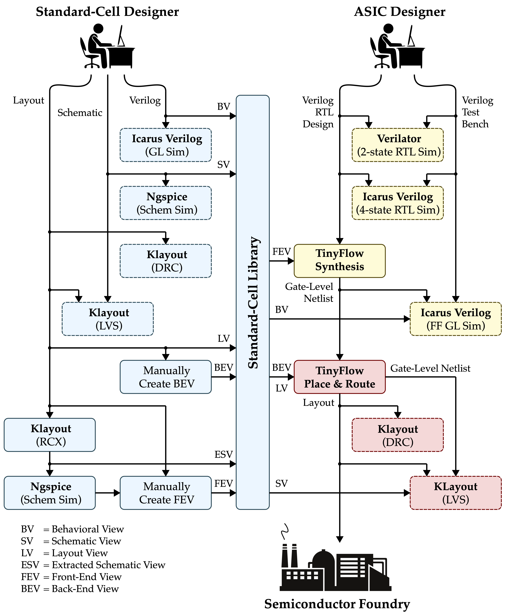
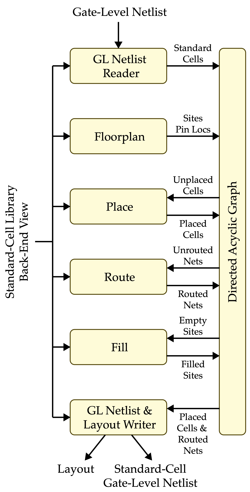

ECE 6745 Project 1: TinyFlow Tape-Out
TinyFlow Back-End
In this project, students will build their own TinyFlow, a very simple standard-cell-based flow. They will develop seven standard cells in TSMC 180nm and the corresponding standard cell behavioral, schematic, layout, extracted schematic, front-end, and back-end views. They will then implement simple algorithms for synthesis (technology mapping via tree covering, static timing analysis) and place-and-route (simulated annealing, 3D maze routing). Finally they will combine this work with open-source Verilog RTL and gate-level simulators and an open-source LVS/DRC tool to create the complete TinyFlow. Even though their TinyFlow will only support a very small combinational subset of Verilog, this project still gives students a unique hands-on opportunity to appreciate every step required in more sophisticated commercial tools. Each group will create a tiny block using their TinyFlow and these blocks will be aggregated into a single unified tape-out on the TSMC 180nm technology node.
The project includes three parts:
- Part A: TinyFlow Standard Cells
- Part B: TinyFlow Front End
- Part C: TinyFlow Back End
Continue working with your group from Part A and B. You can confirm your group on Canvas (Click on People, then Groups, then search for your name to find your project group).
All students must contribute to all parts!
It is not acceptable for one student to do all of Part A+B and a different student to do all of part C. It is not acceptable for one student to exclusively work on one algorithm while the other student exclusively works on a different algorithm. All students must contribute to all parts. The instructors will also survey the Git commit log on GitHub to confirm that all students are contributing equally. If you are using a "pair programming" style, then both students must take turns using their own account so both students have representative Git commits. Students should create commits after finishing each step of the project, so their contribution is clear in the Git commit log. A student's whose contribution is limited as represented by the Git commit log will receive a significant deduction to their project score.
This handout assumes that you have read and understand the course
tutorials and that you have attended the lab sections. To get started,
use VS Code to log into a specific ecelinux server, use MS Remote
Desktop to log into the same ecelinux server, source the setup scripts,
and clone your remote repository from GitHub:
% source setup-ece6745.sh
% source setup-gui.sh
% xclock &
% mkdir -p ${HOME}/ece6745
% cd ${HOME}/ece6745
% git clone git@github.com:cornell-ece6745/project1-groupXX
% cd project1-groupXX
% tree
where XX should be replaced with your group number. You can both pull
and push to your remote repository. If you have already cloned your
remote repository, then use git pull to ensure you have any recent
updates before working on your lab assignment.
where XX should be replaced with your group number. Your repo currently
contains the following files (more files will be released soon!).
.
├── asic
│ └── build-fa
│ ├── 01-verilator-rtlsim
│ ├── 02-iverilog-rtlsim
│ ├── 03-tinyflow-synth
│ │ └── run.py
│ └── 04-iverilog-ffglsim
├── rtl
│ ├── FullAdder.v
│ └── test
│ └── FullAdder-test.v
├── stdcells
│ ├── stdcells.v
│ ├── stdcells.sp
│ ├── stdcells.gds
│ ├── stdcells-rcx.sp
│ ├── stdcells-fe.yml
│ ├── stdcells-be.yml
│ └── verilog-test
│ └── ...
└── tinyflow
├── conftest.py
├── pytest.ini
├── pnr
│ ├── tinyv.lark
│ ├── verilog_parser.py
│ ├── StdCellBackEndView.py
│ ├── TinyBackEndDB.py
│ ├── TinyBackEndGUI.py
│ ├── floorplan.py
│ ├── place.py
│ ├── place_unopt.py
│ └── tests
│ └── ...
├── synth
│ ├── tinyv.lark
│ ├── verilog_parser.py
│ ├── StdCellFrontEndView.py
│ ├── TinyFrontEndDB.py
│ ├── TinyFrontEndGUI.py
│ ├── substitute.py
│ ├── techmap_unopt.py
│ ├── techmap.py
│ ├── sta.py
│ └── tests
│ └── ...
├── tinyflow-pnr
└── tinyflow-synth
Go ahead and create a build directory where you will run the synthesis tools and tests:
1. Background on TinyFlow
The complete TinyFlow standard-cell and ASIC design flow is shown below with the back end highlighted in red.

The back end includes place-and-route, design rule checking (DRC), and layout-vs-schematic (LVS). Place-and-route itself consists of six key algorithms.

-
Gate-Level Netlist Reader: Parses Verilog gate-level netlist into directed acyclic graph of standard cells
-
Floorplan: Creates grid of sites and positions input/output pins
-
Place: Places each standard cell on the grid of sites
-
Route: Routes each net on the routing grid
-
Fill: Fills in empty space using FILL standard cells
-
Layout & Gate-Level Netlist Writer: Outputs the final layout along with an updated standard-cell gate-level netlist
We provide you the readers and writers. In this project you are reponsible for implementing the floorplan, place, route, and fill algorithms.
2. Algorithm: Floorplan
Implement both fixed floorplan and automatic floorplan algorithms in the
tinyflow/pnr/floorplan.py file.
2.1. Fixed Floorplan
The fixed floorplan is useful if we know ahead of time the size of the final block and the position of the input and output pins. This kind of floorplanning will be used for the actual tapeout.
Function: floorplan_fixed(db, view, width_um, height_um, io_locs)
Goal: Initialize floorplan with fixed dimensions and IO locations.
Args:
db: TinyBackEndDB containing cells to placeview: StdCellBackEndView containing site dimensionswidth_um: Chip width in micrometersheight_um: Chip height in micrometersio_locs: Dict mapping port names to (x_um, y_um) locations
Returns: None (modifies db in place)
Hint: You will need to use db.floorplan(width,height) which
takes as input a width and height in units of sites. You will need to
use db.get_ioport(name).place(i,j) which takes as input the
location of the ioport in units of the routing grid. Carefully
consider how to convert the provided width, height, and locations in
um to the appropriate units when calling db.floorplan(width,height)
and db.get_ioport(name).place(i,j)
Run the fixed floorplan tests to verify your implementation:
% cd ${HOME}/ece6745/project1-groupXX/tinyflow/build
% pytest ../pnr/tests/floorplan_test.py -v -k fixed
2.2. Automatic Floorplan
The automatic floorplan is useful for design-space exploration where we want to rapidly place-and-route a design without knowing ahead of time how large it might be. The actual width and height of the floorplan is calculated from the target utilization. If the target utilization is 0.5 then this means we want the sum of the area of all the standard cells divided by the area of the final floorplan to be about 0.5. The actual input pin locations are evenly distributed along the left edge of the block, and the actual output pin locations are evenly distributed along the right edge of the block.
Function: floorplan_auto(db, view, target_utilization, aspect_ratio)
Goal: Determine chip dimensions based on cell area and utilization. Also places IO pins along the chip edges.
Args:
db: TinyBackEndDB containing cells to placeview: StdCellBackEndView containing site dimensionstarget_utilization: Fraction of area used (0.0 to 1.0)aspect_ratio: Physical width / height (1.0 = square chip)
Returns: None (modifies db in place)
Hint: Sum the area of all of the standard cells. Keep in mind
get_width() for a standard cell returns the width of the standard
cell in sites. Divide this total area by the target utilization to
get the actual block are. Use the aspect ratio to determine the
height and width of the block, and then use these values with
db.floorplan(width,height). Use db.get_ioport(name).place(i,j) to
place the input/output pins. Carefully consider the units when
specifying all widths, heights, and locations.
Run the automatic floorplan tests to verify your implementation:
% cd ${HOME}/ece6745/project1-groupXX/tinyflow/build
% pytest ../pnr/tests/floorplan_test.py -v -k auto
Once you have implemented both floorplan algorithms, run all of the floorplan tests to verify your implementation:
3. Algorithm: Optimized Placement
Implement a simulated annealing placement algorithm that attempts to
optimize overall wirelength in the tinyflow/pnr/place.py file. Use the
total half-perimeter wire length (HPWL) as the cost estimate for a
placement.
Instead of placing cells on the site grid, your algorithm should place cells on the coarser placement grid. To determine the placement grid, first find the max width across all standard cells in the design. Then use this max width to set the size of each location in the placement grid. Although this is less area efficient, it significantly simplifies placement since we are guaranteed placed cells will not overlap.
3.1. Half-Perimeter Wire Length (HPWL)
We will be using the total half-perimeter wire length (HPWL) as our cost metric for any given placement. The HPWL is computed over all placed cells and IO ports. For each net:
- Find the minimal bounding box around all placed pins in the net
- The HPWL is the height plus width of the bounding box
To find the total HPWL simply add together the HPWL for every net.
Implement the hpwl function in tinyflow/pnr/place.py.
Function: hpwl(db)
Goal: Compute total HPWL (half-perimeter wirelength) using
bounding box per net. Use pin locations in routing grid units
(from pin.get_node()).
Args:
db: TinyBackEndDB with placement
Returns: HPWL (int)
Run the HPWL tests to verify your implementation:
3.2. Initial Placement
For simulated annealing we want to start with a random initial placement.
Remember we are placing cells on the coarser placement grid. The seed
can be used to create different random initial placements which might be
useful if we are unable to route a specific placement. Ensure that two
cells are never overlap. Implement the place_initial function in
tinyflow/pnr/place.py.
Function: place_initial(db, seed)
Goal: Random initial cell placement.
Args:
db: TinyBackEndDB with floorplan initializedseed: Random seed for reproducibility (None = don't reseed)
Returns: None (modifies db in place)
Run the initial placement tests to verify your implementation:
% cd ${HOME}/ece6745/project1-groupXX/tinyflow/build
% pytest ../pnr/tests/place_test.py -v -k initial
3.3. Simulated Annealing Placement
This function should assume we have already done the initial placement. The function should iterate for a given number of iterations. Each iteration should:
- Initialize the temperature with the given initial temperature
- Randomly select a cell
- Randomly select a location in the coarser placement grid
- If the selected location is empty, perform the move by calling
cell.set_unplace()thencell.set_place()at the new location - If the selected location is not empty, perform the swap by first
calling
set_unplace()on both cells to free their sites, then callingset_place()on both cells at their new locations - Compute the new total HPWL cost after the move or swap
- If the change in cost is negative, accept the move or swap
- If the change in cost is positive, only accept the move or swap with probability \(e^{-\Delta c/T}\)
- If the move or swap is not accepted, revert by calling
set_unplace()andset_place()to restore the original positions - Decrease the temperature by the cooling rate
- If the temperature is less than the given final temperature stop
Note that students can experiment with different cost functions. They may
want to penalize a net with a very small HPWL to try and avoid cells from
being bunched too close together causing significant routing congestion.
Implement the place_anneal function in tinyflow/pnr/place.py.
Function: place_anneal(db, seed, initial_temp, cooling_rate, final_temp, max_iter)
Goal: Simulated annealing optimization to minimize wirelength.
Args:
db: TinyBackEndDB with initial placementseed: Random seed for reproducibility (None = don't reseed)initial_temp: Starting temperaturecooling_rate: T *= cooling_rate each iterationfinal_temp: Stop when T < final_tempmax_iter: Maximum iterations
Returns: None (modifies db in place)
Run the simulated annealing tests to verify your implementation:
% cd ${HOME}/ece6745/project1-groupXX/tinyflow/build
% pytest ../pnr/tests/place_test.py -v -k anneal
3.4. Placement
Now that we have an initial placement algorithm and the simulated
annealing we can put them together in the placement function which should
just call place_init and then place_anneal. Implement the place
function in tinyflow/pnr/place.py.
Function: place(db, seed)
Goal: Run complete placement: initial placement, SA optimization.
Args:
db: TinyBackEndDB with initial placementseed: Random seed for reproducibility (None = don't reseed)
Returns: None (modifies db in place)
Once you have implemented all placement functions, run all of the placement tests to verify your implementation:
4. Testing
Once you have implemented all algorithms, run all of the back-end tests at once to verify everything works together.
Just because all of the tests pass does not mean your implementation is correct. You are encouraged to add more tests.
5. API Reference
This section provides a quick reference for the classes and methods you will use when implementing the floorplan and placement algorithms.
Coordinate Systems
There are two coordinate systems used in the back end:
-
Site grid uses
(row, col)coordinates. Each cell occupies one or more sites in a row. Cell placement uses site grid coordinates (e.g.,cell.set_place(row, col)). -
Routing grid uses
(i, j, k)coordinates.icorresponds to the row direction (vertical),jcorresponds to the column direction (horizontal), andkis the metal layer (1=M1, 2=M2, etc.). The routing grid is finer than the site grid — there are multiple routing tracks per site row in theidirection. Pin locations and I/O port placement use routing grid coordinates (e.g.,pin.get_node()returns(i, j, k)).
5.1. StdCellBackEndView (view)
The library view provides technology information (site dimensions, layer info, cell definitions).
| Method/Attribute | Returns | Description |
|---|---|---|
view.get_site() |
Site |
Get the site definition |
view.get_site().get_width() |
int |
Site width in lambda |
view.get_site().get_height() |
int |
Site height in lambda |
view.get_cell(ref) |
Cell |
Get library cell by reference name |
view.get_cell(ref).get_width() |
int |
Cell width in lambda |
view.get_layer('metal1') |
Layer |
Get a metal layer |
view.get_layer(name).get_track_pitch() |
int |
Track pitch in lambda |
view.get_lambda_um() |
float |
Lambda unit in micrometers (0.09) |
5.2. TinyBackEndDB (db)
The backend database manages cells, nets, I/O ports, and the site and routing grids.
Floorplan and grid:
| Method/Attribute | Returns | Description |
|---|---|---|
db.floorplan(num_rows, num_cols) |
None | Initialize site grid (units: sites) |
db.get_num_rows() |
int |
Number of rows in site grid |
db.get_num_cols() |
int |
Number of sites per row |
db.get_grid_size_i() |
int |
Routing grid size in i (vertical tracks) |
db.get_grid_size_j() |
int |
Routing grid size in j (horizontal tracks) |
db.get_core() |
list[list[Site]] |
2D site grid |
Cells:
| Method/Attribute | Returns | Description |
|---|---|---|
db.get_cells() |
tuple[Cell] |
Get all cell instances |
db.get_cell(name) |
Cell |
Get a cell by instance name |
Nets:
| Method/Attribute | Returns | Description |
|---|---|---|
db.get_nets() |
tuple[Net] |
Get all nets |
db.get_net(name) |
Net |
Get a net by name |
I/O ports:
| Method/Attribute | Returns | Description |
|---|---|---|
db.get_ioport(name) |
IOPort |
Get an I/O port by name |
db.get_in_ports() |
tuple[IOPort] |
Get all input ports |
db.get_out_ports() |
tuple[IOPort] |
Get all output ports |
Placement helpers:
| Method/Attribute | Returns | Description |
|---|---|---|
db.get_placement() |
dict |
Get current placement as {name: (row, col)} |
db.apply_placement(dict) |
None | Apply a saved placement (unplaces all first) |
5.3. Cell
| Method/Attribute | Returns | Description |
|---|---|---|
cell.get_name() |
str |
Instance name |
cell.get_width() |
int |
Width in sites |
cell.get_place() |
list |
Current placement [row, col] (site coords) |
cell.is_placed() |
bool |
Whether the cell is placed |
cell.set_place(row, col) |
None | Place cell at site coordinates |
cell.set_unplace() |
None | Remove cell from placement |
cell.pins |
list[Pin] |
List of pins on this cell |
5.4. Pin
| Method/Attribute | Returns | Description |
|---|---|---|
pin.get_name() |
str |
Pin name |
pin.get_node() |
(i, j, k) |
Routing grid coordinates (None if unplaced) |
pin.net |
Net |
The net this pin belongs to |
5.5. IOPort
IOPort is a subclass of Pin. It represents an I/O port at the chip boundary.
| Method/Attribute | Returns | Description |
|---|---|---|
ioport.place(i, j) |
None | Place at routing grid edge coordinates |
ioport.get_node() |
(i, j, k) |
Routing grid coordinates (k = 2, i.e., M2) |
ioport.name |
str |
Port name |
5.6. Net
| Method/Attribute | Returns | Description |
|---|---|---|
net.net_name |
str |
Net name |
net.pins |
list[Pin] |
List of connected pins (includes IOPorts) |